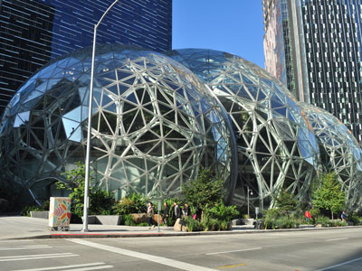
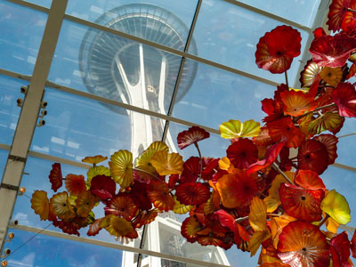
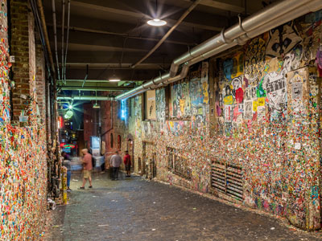
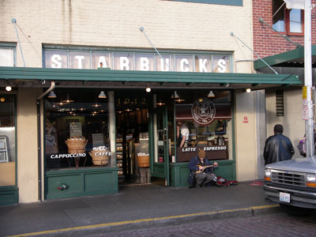
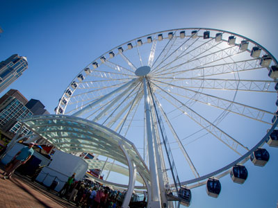
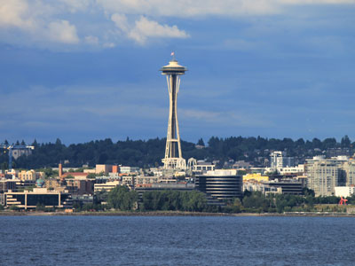
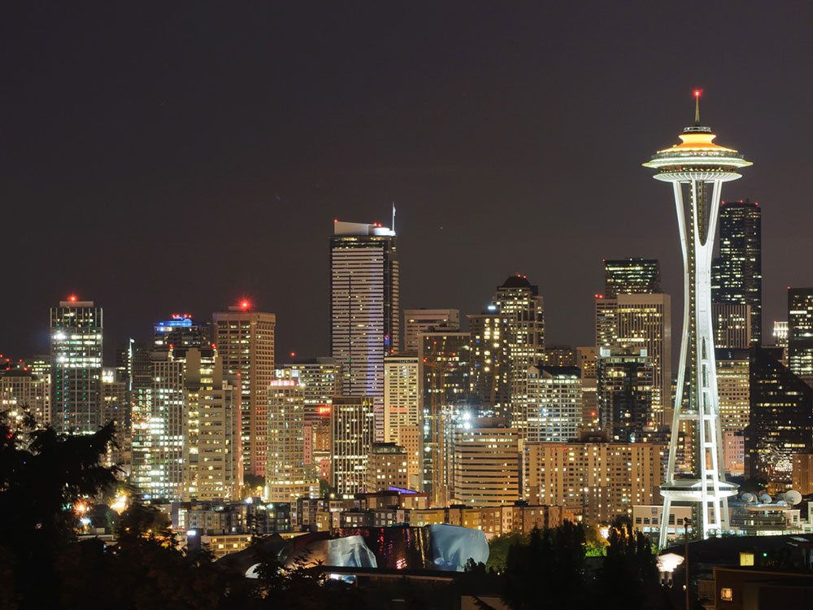

Seattle Travel Guide
Seaport city on the West Coast of the United States is the largest city in both the state of Washington and the Pacific Northwest region of North America.
Top Locations


-400.jpg)


Places to See in Seattle

Joe Mabel, CC BY-SA 4.0, via Wikimedia Commons; Image Size Adjusted
Alki Beach
Urban waterfront destination offering sandy shoreline, scenic walking paths, mountain views, beach recreation, and sweeping panoramas of Puget Sound and the Seattle skyline.
Joe Mabel, CC BY-SA 4.0, via Wikimedia Commons; Image Size Adjusted

Burke Museum of Natural History and Culture
Museum featuring extensive collections of fossils, dinosaurs, Northwest Native art, cultural artifacts, plants, animals, and natural history specimens displayed alongside active research laboratories.
Joe Mabel, CC BY-SA 4.0, via Wikimedia Commons; Image Size Adjusted
The Spheres (Amazon Spheres)
Three spherical glass dome conservatories which range from three to four stories tall and are covered in pentagonal hexecontahedron panels comprises part of the Amazon headquarters campus
Joe Mabel, CC BY-SA 4.0, via Wikimedia Commons; Image Size Adjusted
Ballard Locks
Historic navigation landmark featuring operating locks, fish ladders, botanical gardens, and close-up views of vessels traveling between freshwater waterways.

Burley Packwood, CC BY-SA 4.0, via Wikimedia Commons; Image Size Adjusted
Chihuly Garden and Glass
Exhibit in the Seattle Center showcasing the studio glass of Dale Chihuly
Joe Mabel, CC BY-SA 4.0, via Wikimedia Commons; Image Size Adjusted
Discovery Park
Expansive coastal park featuring forested trails, dramatic sea bluffs, protected beaches, wildlife habitats, and sweeping views of Puget Sound and surrounding mountain ranges.
Joe Mabel, CC BY-SA 4.0, via Wikimedia Commons; Image Size Adjusted
Fremont Troll
Whimsical public art sculpture depicting a giant concrete troll clutching a real automobile beneath a highway bridge in a quirky urban setting.
Joe Mabel, CC BY-SA 4.0, via Wikimedia Commons; Image Size Adjusted
Gas Works Park
Waterfront park blending preserved industrial structures, open green spaces, kite-flying hills, and spectacular skyline views along the shores of Lake Union.

Diego Delso, CC BY-SA 4.0, via Wikimedia Commons; Image Size Adjusted
Gum Wall
Brick wall covered in used chewing gum located in an alleyway in Post Alley under Pike Place Market in Downtown Seattle
Joe Mabel, CC BY-SA 4.0, via Wikimedia Commons; Image Size Adjusted
International Fountain
Iconic musical fountain featuring synchronized water displays, colorful illumination, and interactive public spaces at the heart of a renowned cultural campus.
Joe Mabel, CC BY-SA 4.0, via Wikimedia Commons; Image Size Adjusted
Kerry Park
Scenic hilltop overlook offering iconic skyline views, waterfront panoramas, and one of the most photographed perspectives of the city and surrounding mountains.
Joe Mabel, CC BY-SA 4.0, via Wikimedia Commons; Image Size Adjusted
Klondike Gold Rush National Historical Park
Historic museum and visitor center preserving the stories, artifacts, and cultural impact of the Klondike Gold Rush and Seattle's role in the movement.
Joe Mabel, CC BY-SA 4.0, via Wikimedia Commons; Image Size Adjusted
Museum of Flight
World-renowned aviation and space museum showcasing historic aircraft, spacecraft, interactive exhibits, and the evolution of flight from the Wright brothers to modern exploration.
Joe Mabel, CC BY-SA 4.0, via Wikimedia Commons; Image Size Adjusted
Museum of History & Industry (MOHAI)
Interactive history museum exploring the region's innovation, industry, culture, and maritime heritage through engaging exhibits and historic artifacts.
Joe Mabel, CC BY-SA 4.0, via Wikimedia Commons; Image Size Adjusted
Museum of Pop Culture
Immersive entertainment museum celebrating music, science fiction, fantasy, gaming, and popular culture through interactive exhibits and iconic artifacts.
Joe Mabel, CC BY-SA 4.0, via Wikimedia Commons; Image Size Adjusted
Olympic Sculpture Park
Waterfront outdoor museum featuring monumental sculptures, landscaped walking paths, shoreline habitats, and sweeping views of Puget Sound and the Olympic Mountains.

John Anderson, CC BY-SA 2.0, via Wikimedia Commons; Image Size Adjusted
Original Starbucks
The first Starbucks Coffee store, founded in 1971
Pike Place Market
Seattle's most popular tourist destination, this continuously operated public farmers' markets famous for employees throwing three-foot salmon and other fish to each other rather than passing them by hand is one of the oldest in the United States
Joe Mabel, CC BY-SA 4.0, via Wikimedia Commons; Image Size Adjusted
Pioneer Square
Historic urban district showcasing beautifully preserved nineteenth-century architecture, art galleries, cultural landmarks, public squares, and the birthplace of modern Seattle.
Joe Mabel, CC BY-SA 4.0, via Wikimedia Commons; Image Size Adjusted
Seattle Aquarium
Marine conservation center featuring Pacific Northwest sea life, immersive ocean exhibits, interactive experiences, and close encounters with aquatic animals.
Joe Mabel, CC BY-SA 4.0, via Wikimedia Commons; Image Size Adjusted
Seattle Art Museum
Renowned fine arts museum featuring global collections, rotating exhibitions, and exceptional works spanning thousands of years of human creativity.

N i c o l a, CC BY 2.0, via Wikimedia Commons; Image Size Adjusted

Seattle Great Wheel
Giant Ferris wheel at Pier 57 on Elliott Bay in Seattle, Washington, at an overall height of 175 feet (53.3 m)
Joe Mabel, CC BY-SA 4.0, via Wikimedia Commons; Image Size Adjusted
Seattle Public Library - Central Library
Architecturally acclaimed public library featuring extensive collections, innovative technology, reading spaces, and striking contemporary design.
Joe Mabel, CC BY-SA 4.0, via Wikimedia Commons; Image Size Adjusted
Sky View Observatory
Observation deck offering panoramic views of the skyline, surrounding mountains, waterways, and urban landmarks from one of the tallest buildings in the Pacific Northwest.
Joe Mabel, CC BY-SA 4.0, via Wikimedia Commons; Image Size Adjusted
Smith Tower
Historic skyscraper featuring panoramic city views, interactive exhibits, vintage architecture, and a landmark observatory celebrating Seattle's early development.

Rickmouser45, Public domain, via Wikimedia Commons; Image Size Adjusted

Space Needle
An icon of the city of Seattle and the Pacific Northwest, the 605 feet observation tower has been designated a Seattle landmark
Joe Mabel, CC BY-SA 4.0, via Wikimedia Commons; Image Size Adjusted
Washington Park Arboretum
Expansive botanical garden featuring diverse plant collections, woodland trails, wetlands, and one of the most significant living plant museums in the Pacific Northwest.
Joe Mabel, CC BY-SA 4.0, via Wikimedia Commons; Image Size Adjusted
Wing Luke Museum
Smithsonian-affiliated museum dedicated to preserving and sharing the history, culture, and contributions of Asian Pacific American communities through exhibits and storytelling.
Overview
Seattle is the largest city in the Pacific Northwest, on Puget Sound between the Cascade Mountains and the Olympic Mountains, and it is known as the "Emerald City" for its green surroundings. It is famous for the Space Needle, for Pike Place Market, for coffee, the home of Starbucks, for grunge music, and for technology giants such as Amazon, Microsoft, and Boeing. With mountains, water, and a lively cultural scene, Seattle is one of the most scenic and innovative cities in the country.
Visitors come to Seattle for the Space Needle, Pike Place Market, and the Museum of Pop Culture. They also come for Chihuly Garden and Glass, the Seattle Aquarium, the Museum of Flight, and for ferries and views of Mount Rainier, and for Seahawks, Mariners, and Kraken games.
History
The Duwamish and Suquamish peoples lived on Elliott Bay, and in 1851 the Denny Party landed at Alki Point, and the settlement moved to the current site and was named for Chief Si'ahl (Seattle), a leader of the Duwamish and Suquamish. The city grew as a timber port, and the Great Seattle Fire of 1889 destroyed the downtown, after which it was rebuilt on higher ground, leaving the "Seattle Underground." The Klondike Gold Rush of 1897 made Seattle the gateway to the Yukon, and the city boomed. Boeing, founded in 1916, made it an aerospace center, the 1962 World's Fair gave it the Space Needle, and in the 1980s and 1990s Microsoft, Starbucks, Amazon, and grunge bands such as Nirvana and Pearl Jam put it on the world map.
Sightseeing and Popular Landmarks
The Space Needle, built for the 1962 World's Fair, is 605 feet tall and has a revolving glass floor and an observation deck, and Pike Place Market, opened in 1907, is a bustling market with fish-throwing vendors, flowers, and the first Starbucks. The Seattle Great Wheel on the waterfront, the Smith Tower, the Sky View Observatory, the Amazon Spheres, and the Central Library are other landmarks. The quirky Fremont Troll and Gum Wall are favorites, and Kerry Park has the classic skyline view.
Culture and Museums
The Museum of Pop Culture, designed by Frank Gehry, has exhibits on music, science fiction, and pop culture, and Chihuly Garden and Glass displays the glass art of Dale Chihuly. The Seattle Art Museum, the Museum of History & Industry, the Burke Museum, and the Wing Luke Museum of Asian Pacific American experience are major institutions. The Museum of Flight, near Boeing Field, is one of the largest air and space museums in the world, and the Klondike Gold Rush National Historical Park has a visitor center in Pioneer Square.
Parks
Seattle has many parks with views. Discovery Park, the largest in the city, has a lighthouse and beaches, and Gas Works Park is built around a former gasification plant on Lake Union. Alki Beach has views of the skyline, the Washington Park Arboretum has gardens, and the Ballard Locks have a fish ladder and gardens. The International Fountain at Seattle Center is a popular gathering place, and Mount Rainier, Olympic National Park, and the San Juan Islands are day trips.
Sports
Seattle has several major league teams. The Seattle Seahawks of the NFL and the Seattle Sounders FC of Major League Soccer play at Lumen Field, and the Seahawks won the Super Bowl in 2014, and the Seattle Mariners of Major League Baseball play at T-Mobile Park. The Seattle Kraken of the NHL, the Seattle Storm of the WNBA, and Seattle Reign FC of the NWSL also play in the city, and the fans' loud "12s" are famous.
Seasons and Weather
Seattle has a mild marine climate with dry summers and rainy winters. Summers are warm and sunny, with highs in the 70s and low 80s°F, and winters are cool and cloudy, with highs in the 40s°F, about 37 inches of rain a year, mostly from October to April, and little snow. July through September are the best months to visit, when the mountains are visible.
This article uses material from Wikipedia as well as information from official tourism and institutional sources. Key references include Visit Seattle, Space Needle, Pike Place Market, Museum of Pop Culture, Museum of Flight, Seattle Seahawks, Seattle Mariners, and National Weather Service Seattle. Wikipedia material is from the articles "Seattle" and "History of Seattle", and is available under the Creative Commons Attribution-Share-Alike License 3.0.
